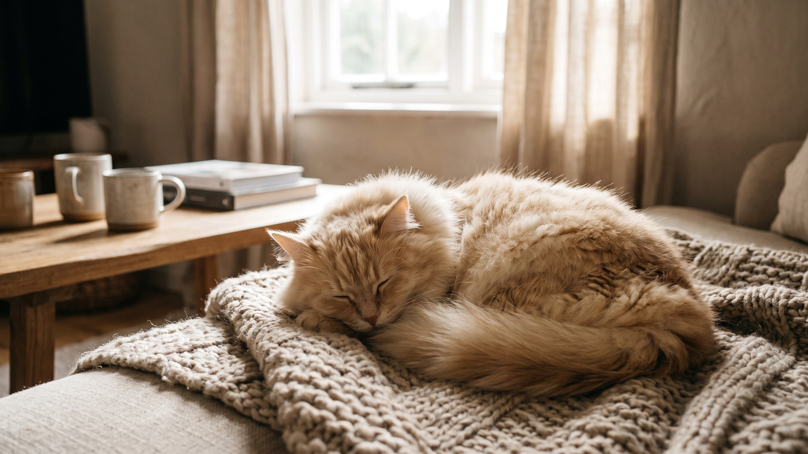

У сибирской кошки плотный подшёрсток и длинный остевой волос, поэтому поверхностного движения щёткой недостаточно. Регулярная проверка слоёв помогает заметить спутанные участки до плотного колтуна. Ниже график на обычный период и линьку, порядок зон и чек-лист спокойного расчёсывания.
🐾 Спросите AI-ветеринара о вашей кошки
AnimaLife отвечает на вопросы о кошках и собаках круглосуточно, ведёт дневник здоровья и напоминает о прививках. Бесплатно, без записи.
Открыть AnimaLife → Открыть в MAX →
У вас iPhone? AnimaLife есть в App Store
Начните с этого ориентира и скорректируйте частоту по состоянию шерсти. Если расчёска снова встречает сопротивление в тех же местах, проверяйте их чаще.
Отмечайте в календаре дату и зоны, где расчёска задерживалась. Такая запись покажет реальную потребность кошки точнее общего правила. После линьки постепенно вернитесь к обычной частоте, сохранив регулярную проверку подмышек и задних лап.
Для двойной шерсти подготовьте металлическую расчёску с редкими и средними зубьями, а также пуходёрку с закруглёнными кончиками. Расчёска распутывает и проверяет результат, пуходёрка собирает выпавший волос без сильного нажима.
Работайте на сухой шерсти. Разделите её рукой на небольшой слой, придерживайте у основания и сначала освободите концы. Затем продвигайтесь ближе к коже по направлению роста волос. Не тяните спутанный участок целиком.
Ножницы и острые колтунорезы возле кожи не используйте. Плотный колтун, который нельзя разобрать пальцами и расчёской, лучше доверить грумеру.
Не распутывайте мокрые колтуны и не мойте кошку до проверки шерсти: после высыхания спутанные участки могут стать плотнее. Кожу не царапайте зубьями и не проводите пуходёркой многократно по одному месту.
В период линьки на расчёске остаётся заметно больше шерсти, но кожа выглядит спокойной, покрытие остаётся равномерным, а кошка охотно двигается и ухаживает за собой. Между сеансами не появляются новые плотные узлы.
Когда нужен ветеринар. Запишитесь на осмотр, если линька резко изменилась, появились оголённые участки, покраснение, повреждения кожи или постоянное вылизывание одного места. Также обратитесь к врачу, когда прикосновение к определённой зоне стало болезненным для кошки.
🐾 Всё о вашем питомце в одном приложении
AI-ветеринар, дневник здоровья, напоминания об уходе и прививках. Бесплатно, в Telegram и MAX.
Установить AnimaLife → Открыть в MAX →
У вас iPhone? AnimaLife есть в App Store
🐾 Понравился разбор?
Подпишитесь на канал: каждый день разбираем по одному тревожному симптому у кошек и собак: что в пределах нормы, а когда пора к врачу. Подпишитесь, чтобы не пропустить разбор, который может спасти здоровье вашего питомца.
Материал носит информационный характер и не заменяет очную консультацию ветеринара.